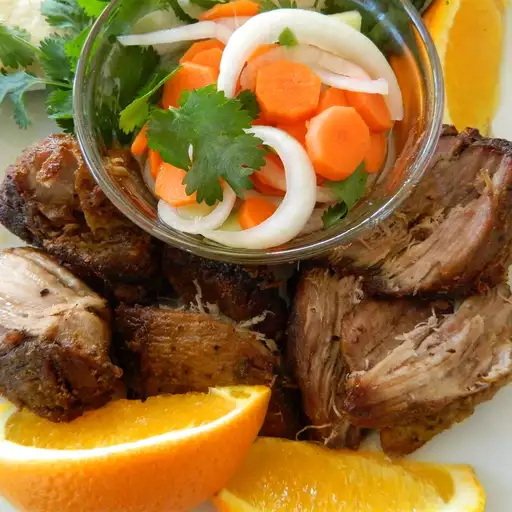

Braised pork

It must have been the subliminal beer and liquor advertising that got me, because I wasn't even thinking about Cinco de Mayo when I decided to make this milk-braised pork carnitas recipe. The milk braising beforehand seems to give the meat a little extra succulence. The subtle sweetness from the orange is also very nice.
Ingredients
- 3 ½ pounds boneless pork shoulder, cut into large pieces
- 1 tablespoon freshly ground black pepper
- 1 tablespoon kosher salt, or more to taste
- 2 tablespoons vegetable oil
- 2 bay leaves
- 2 teaspoons ground cumin
- 1 teaspoon dried oregano
- ¼ teaspoon cayenne pepper
- 1 orange, juiced and zested
- 2 cups whole milk
Steps
- Season pork with pepper and salt.
- Heat oil in large pot over high heat. Working in batches, cook pork in the hot oil until browned on all sides, about 5 minutes. Return all cooked pork and accumulated juice to pot.
- Season pork with bay leaves, cumin, dried oregano, and cayenne pepper. Stir in fresh orange juice, orange zest, and milk. Bring mixture to a boil over high heat; reduce heat to low. Cover and simmer, stirring occasionally, until meat is fork tender but not falling apart, about 2 hours.
- Preheat oven to 450 degrees F (230 degrees C).
- Remove pork from liquid. Skim some fat from the pot to grease a baking dish. Transfer the pieces of pork to the baking dish. Drizzle about 2 more tablespoons of the floating fat over the meat. Season with more salt, if needed.
- Bake in preheated oven until pork is browned, about 15 minutes. Stir pork.
- Turn on oven's broiler. Cook pork under broiler until crisp, 2 to 3 minutes.